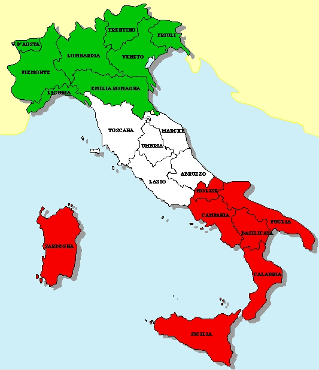

Índice
Itália
A Itália (em italiano: Italia), oficialmente República Italiana (em italiano: Repubblica Italiana), é um país localizado no sul da Europa. Composta por uma península banhada pelo mar Mediterrâneo e diversas ilhas, como a Sicília e a Sardenha, a Itália é conhecida por sua rica herança histórica, cultural e artística.
História
A história da Itália é fundamental para a civilização ocidental. O território italiano foi berço do Império Romano, uma das maiores civilizações da antiguidade, que deixou um legado duradouro em áreas como direito, arte, arquitetura, engenharia e língua. Durante o Renascimento, a Itália foi o centro de uma revolução cultural que transformou a arte, a ciência e o pensamento europeu.
Geografia
A Itália está localizada no sul da Europa, ocupando a península Itálica e várias ilhas no Mar Mediterrâneo. O país faz fronteira com França, Suíça, Áustria e Eslovênia. Seu território inclui dois estados independentes: Cidade do Vaticano e San Marino. O país é conhecido por sua geografia diversificada, que inclui os Alpes ao norte e o vulcão ativo Monte Etna na Sicília.
Principais Regiões e suas Capitais
Lombardia
Capital: Milão
Maior região econômica da ItáliaLácio
Capital: Roma
Sede da capital nacionalToscana
Capital: Florença
Centro histórico e culturalCampânia
Capital: Nápoles
Região do Monte VesúvioSicília
Capital: Palermo
Maior ilha do MediterrâneoVêneto
Capital: Veneza
Região dos canais famososPiemonte
Capital: Turim
Região dos Alpes italianosEmília-Romanha
Capital: Bolonha
Centro gastronômico italianoCultura
A cultura italiana exerceu uma influência profunda no desenvolvimento da arte, música, arquitetura, literatura, ciência e moda globais. O país é mundialmente reconhecido por sua gastronomia, com pratos como pizza e massa, seu café, vinhos e design. A Itália possui o maior número de locais considerados Patrimônio Mundial pela UNESCO, refletindo sua extraordinária riqueza histórica e cultural.